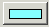

使用常规首选项可指定 MIB 导入选项。
要设置目录首选项，请单击  首选项，或在主菜单中单击，然后在“首选项”窗口的左窗格中单击常规。
首选项，或在主菜单中单击，然后在“首选项”窗口的左窗格中单击常规。
- 如果选中了导入时遍历子目录复选框，那么导入过程中将搜索所有子目录以找到所有 MIB 文件。
- 在文件分割器最大线程数字段中，指定在导入过程中用于检测 MIB 的计算线程数。这可提高导入大量 MIB 时的性能。缺省值为 5。
- 在 MIB 解析器最大线程数字段中，指定在导入过程中用于解析 MIB 的计算线程数。这可提高导入大量 MIB 时的性能。缺省值为 10。
- 要更改在 MIB 管理器 窗口中所作的任何选择的突出显示项颜色，请单击 ，从颜色选用板中选择颜色，然后单击确定。